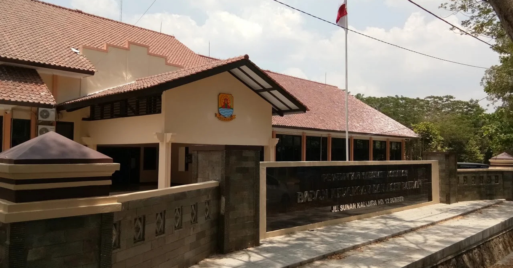

TENTANG SISTEM

Basis informasi spasial aset daerah Kabupaten Cirebon.
WebGIS Aset Daerah Kabupaten Cirebon dikembangkan sebagai media penyajian informasi spasial untuk memudahkan penelusuran lokasi dan informasi bidang tanah aset daerah.
01
Informasi Bidang Aset Terintegrasi
02
Pencarian dan Penelusuran Aset
03
Analisis Radius, Statistik, dan Jarak
INFORMASI INSTANSI
Badan Keuangan dan Aset Daerah
Badan Keuangan dan Aset Daerah (BKAD) Kabupaten Cirebon merupakan perangkat daerah yang berkaitan dengan pengelolaan keuangan serta aset milik Pemerintah Kabupaten Cirebon.
LOKASI KANTOR
BKAD Kabupaten Cirebon
Buka di Google Maps
↗
INFORMASI KONTAK
Alamat
Jl. Sunan Kalijaga No.12,
RT.01/RW.2, Sumber,
Kec. Sumber, Kabupaten Cirebon,
Jawa Barat 45611
Email
bkad@cirebonkab.go.id
Kontak
0811-2222-1281